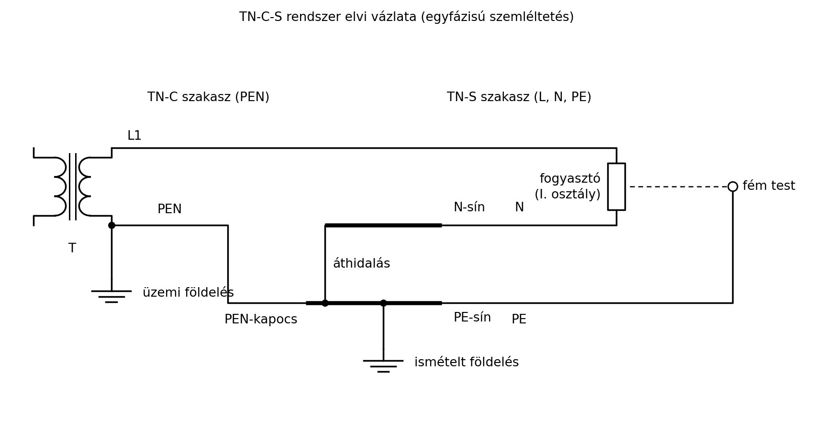

Egy lakásfelújítás során a villanyszerelő a mérőhelynél azt látja, hogy a bejövő elosztó kábel négy eres: három fázis és egy zöld-sárga, a végein világoskékkel jelölt vezető. Ez a vezető egyszerre látja el a nullavezető és a védővezető feladatát, ezért PEN-nek hívják. A fürdőszoba felújításakor azonban az áram-védőkapcsoló (FI-relé) és a külön védőérintkezős dugaljak miatt a védővezetőt és a nullavezetőt szét kell választani. Ha a szerelő rossz ponton köti össze a PE és N vezetőt, a védelmi rendszer nem működik, sőt életveszélyes helyzetet teremthet.
Ebben az alfejezetben a kisfeszültségű hálózati rendszerek földelési viszonyait és betűjelölését tanuljuk meg. A téma azért munkahelyi szempontból alapvető, mert a hálózati rendszer ismerete nélkül nem lehet eldönteni, hol szabad a védővezetőt és a nullavezetőt összekötni, hol kell áram-védőkapcsolót használni, és miért tilos a PEN vezetőt megszakítani.
A villamos berendezések áramütés elleni védelmét a hálózat földelési viszonyai határozzák meg. A hálózati rendszerek nemzetközi betűjelölése két vagy három betűből áll, és a betűk pontos sorrendje mondja meg, hogy a tápláló oldal és a fogyasztói testek hogyan viszonyulnak a földhöz.
Definíció. A kisfeszültségű hálózati rendszer betűjelölése: - Az első betű a tápláló rendszer (transzformátor vagy generátor) földelési viszonyát mutatja: - T = a tápláló rendszer egy pontja (általában a csillagpont) közvetlenül földelve, - I = a tápláló rendszer aktív részei nincsenek közvetlenül földelve, vagy nagy impedancián keresztül földeltek (izolált). - A második betű a fogyasztói testek (készülékburkolatok, fémházak) földelési viszonyát mutatja: - T = a test közvetlenül földelve, függetlenül a tápláló rendszer földelésétől, - N = a test a tápláló rendszer földelt pontjához (a nullaponthoz) közvetlenül, fémhálózati vezetővel kapcsolódik. - A harmadik betű csak TN rendszereknél létezik, és azt mutatja, hogy a földelt csillagponthoz menő nullavezető (N) és a védővezető (PE) közös vagy külön vezető-e: - C = közös (combined) PEN vezető, - S = külön (separated) PE és N vezető, - C-S = a táplálás egy szakaszán közös PEN, majd szétválasztott PE és N.
A layers ábra összefoglalja az egyes rendszerek
legfontosabb jellemzőit.
Fontos, hogy a betűjelölés nem a kábel ereinek számát, hanem a földelési viszonyokat írja le. A vezetékszám ezért nem azonosítja a rendszert: egy háromfázisú TN-C hálózat 4 vezetékes (L1, L2, L3, PEN), a TN-S 5 vezetékes, de egy TT-rendszerű háromfázisú csatlakozás is 4 vezetékkel (L1, L2, L3, N) érkezik, mert a PE ott a helyi földelőről jön; egyfázisú körben ugyanezek 2, illetve 3 eres kialakítások.
A TN rendszerekben a tápláló transzformátor csillagpontja közvetlenül földelve van, és a készülékek testjei egy fémhálózati vezetőn, a PEN vagy a PE vezetőn keresztül csatlakoznak ehhez a földelt ponthoz. A hibaáram ilyenkor fémes hurkon folyik vissza a transzformátorhoz, ezért általában elég nagy ahhoz, hogy a túláramvédelem (kismegszakító vagy biztosító) leoldjon.
A TN-C rendszerben a nullavezető és a védővezető feladatait egyetlen közös vezető, a PEN vezető látja el. A PEN vezető egyszerre üzemi áramot vezet (mint a nulla) és védővezetőként is működik, mert a készülékek testjei erre csatlakoznak.
Szabály. A TN-C rendszerben a PEN vezető: - zöld-sárga színű, de a végein világoskékkel meg kell jelölni, hogy ott nullavezetőként is szolgál; - nem szakítható meg, nem tartalmazhat kapcsolót vagy biztosítót, mert akkor a védővezetői funkció megszűnne; - minimális keresztmetszete külön követelmény, amelyet a hatályos szabvány és a hálózati engedélyes előírása határoz meg (ellenőrizendő: aktuális érték).
A TN-C rendszer előnye az egyszerűség és az alacsonyabb kábelköltség, mert négy vezetékkel (L1, L2, L3, PEN) kiépíthető. A hátránya az, hogy a PEN vezető szakadásakor a fázisfeszültség-terhelések aszimmetriája miatt a készülékek fémtestén életveszélyes feszültség jelenhet meg, és a rendszer érzékeny a védővezetőben folyó üzemi áram okozta zavarokra is.
A TN-S rendszerben a PE és az N vezető a transzformátortól kezdve végig külön van. A készülékek testjei a PE vezetőre csatlakoznak, amelyben normál üzemben nem folyik áram, így nem alakul ki rajta feszültségesés, és a zavarérzékenység is kisebb.
Szabály. A TN-S rendszerben: - a fázisvezetők L1, L2, L3; - a nullavezető N világoskék; - a védővezető PE zöld-sárga; - a PE és N vezetőt tilos bárhol a szétválasztás után összekötni.
A TN-S rendszer 5 vezetéket igényel (három fázis, N, PE), ezért drágább, de biztonságosabb. Valódi TN-S rendszer ott van, ahol a PE és az N már a transzformátortól külön fut – jellemzően saját transzformátorról táplált ipari létesítményekben. A közcélú hálózatról táplált új épületek TN-C-S rendszerűek: a szétválasztás utáni rész ötvezetékes (TN-S jellegű) kiépítésű.
A TN-C-S rendszer a két előbbi kombinációja: a tápláló oldal (általában a közcélú hálózat) TN-C, tehát PEN vezetővel érkezik, majd egy meghatározott ponton – például a mérőhely vagy a főelosztó bejövő oldalán – a PEN vezetőt szétválasztják PE és N vezetőre. A szétválasztás után a fogyasztói berendezés már TN-S-ként működik.
Szabály. A PEN vezető szétválasztásakor: - a PE és N sínt külön kell kialakítani; - a PE vezetőt a szétválasztásnál lehetőség szerint ismételten földelni kell; - a szétválasztás után a PE és N vezető semmilyen ponton nem köthető össze; - a szétválasztás előtti PEN vezetőt nem szabad megszakítani.
A következő elvi ábra a TN-C-S rendszert mutatja.

Az ábrán a transzformátor szekunder csillagpontja (a szekunder tekercs alsó kivezetése) közvetlenül földelve van, innen indul a PEN vezető, amely a szétválasztási pontig egyetlen vezetőként viszi az üzemi és a védő feladatot. A szétválasztási ponton a PEN a PE-sín PEN-kapcsára fut, innen áthidalás vezet az N-sínre; a PE-sínt helyben ismételten földeljük. A szétválasztás után az N (világoskék) és a PE (zöld-sárga) külön halad tovább. A fázisvezető L1 a felső ágon érkezik a fogyasztóhoz, a fogyasztó üzemi árama az N-en tér vissza, a fém teste a PE-re csatlakozik.
A TT rendszerben a tápláló transzformátor csillagpontja közvetlenül földelve van, de a fogyasztói testeket nem a csillagponthoz csatlakoztatjuk, hanem egy saját, független földelőhöz. A „T-T” jelentése tehát: mindkét oldal közvetlenül földelve, de a két földelő egymástól független.
Szabály. A TT rendszer előnye, hogy nincs PEN vezető, így a tápláló oldali PEN-szakadás veszélye nem érinti a fogyasztót. Hátránya, hogy a földzárlati áram a két földelő talajellenállásán keresztül folyik, ezért kicsi lehet, és a túláramvédelem nem feltétlenül old le elég gyorsan. Ezért a TT rendszerben az áram-védőkapcsoló (FI-relé) alkalmazása gyakorlatilag nélkülözhetetlen.
A TT rendszerben a védelem feltétele a földelési ellenállás és az áram-védőkapcsoló érzékenységének összehangolása. A testzárlatkor fellépő érintési feszültség ne haladja meg a váltakozó áramra megengedett, szabványos értéket (ellenőrizendő: aktuális határérték), mielőtt a FI-relé leold.
Összefüggés. TT rendszerben a FI-relé névleges kioldási áramával és a testföldelő ellenállásával:
ahol a megengedett érintési feszültség (tanulási érték: ).
Számítás.
Adott:
(300 mA-es FI-relé),
.
Keresett: a testföldelő legnagyobb megengedett ellenállása
.
Az eredmény nagyságrendileg helyes: egy 300 mA-es FI-reléhez legfeljebb körülbelül 167 Ω-os földelési ellenállás volna elméletileg elég, de a gyakorlatban a jó földelő ellenállása általában jóval kisebb (néhány ohm vagy néhány tíz ohm) a stabil működés érdekében. Ha a FI-relé érzékenyebb, például 30 mA-es, akkor a határ:
de ilyen nagy talajellenállás már bizonytalan, ezért a földelőt itt sem szabad csak a képlettel méretezni; a szabvány és a helyi adottságok miatt kisebb értéket kell elérni (ellenőrizendő).
Az IT rendszerben a tápláló rendszer aktív részei nincsenek közvetlenül földelve, vagy nagy impedancián keresztül földeltek. A készülékek testjei viszont egy vagy több földelőhöz csatlakoznak. Az „I” betű tehát a tápláló oldal izoláltságát, a „T” a testek közvetlen földelését jelzi.
Definíció. Az IT rendszerben az első földzárlati hiba esetén a hibaáram nagyon kicsi, mert a hurok nem záródik fémesen a transzformátorhoz, hanem a szigetelési ellenálláson és a szórt kapacitásokon át. Emiatt a berendezés első hibánál nem kapcsol le, hanem üzemelhet tovább, de a hibát jelezni kell.
A második földzárlat már veszélyes, mert az két különböző fázisú testzárlat esetén fémes zárlati hurkot hozhat létre, és nagy áram folyhat. Ezért az IT rendszerben szigetelésfigyelőt kell alkalmazni, és a második hiba után a védelmi lekapcsolást biztosítani kell.
Számítás.
Adott: a fázisfeszültség
,
az első hiba fémes testzárlat, a hálózat ép vezetőinek eredő szigetelési
ellenállása a földhöz
(a szórt kapacitást ebben a példában elhanyagoljuk).
Keresett: a földzárlati áram nagysága.
Ez az áram önmagában nem elég a kismegszakító leoldásához, és az emberi testen átfolyva sem okoz közvetlenül nagy kockázatot ebben a példában, de a szigetelésfigyelőnek jeleznie kell. Kiterjedt hálózatnál a szórt kapacitások miatt az első hiba árama ennél jóval nagyobb is lehet, ezért ez az eredmény nem általánosítható. A második hiba esetén az áram már a zárlati hurok impedanciájától függ, és jóval nagyobb lehet.
Az ábra ugyanazt a testzárlatot (a fázis a fogyasztó fém testére kerül) mutatja a négy rendszerben. TN-C és TN-C-S rendszerben a hibaáram fémes hurokban, a PEN-en, illetve a PE-n és a PEN-en át tér vissza a transzformátor csillagpontjához; a hurok impedanciája kicsi, a hibaáram száz amper nagyságrendű, így a túláramvédelem gyorsan old. TT rendszerben a hurok a testföldelőn (), a talajon és az üzemi földelőn () át záródik; a hibaáram néhány amper, ezért FI-relé kell (300 mA-es FI-nél ). IT rendszerben az első hibánál a hurok csak a szórt kapacitásokon és a szigetelési ellenálláson át záródik, a hibaáram mA nagyságrendű (a fenti példában 2,3 mA). A HTML-kiadásban a rendszer gombbal választható, a testzárlat ki-be kapcsolható, a TN-C-S rendszernél pedig a szétválasztás előtti PEN-szakadás is kipróbálható: ekkor a testekre a fogyasztón át fázisfeszültség kerülhet, amit a FI-relé nem érzékel.
A magyarországi közcélú kisfeszültségű hálózat jellemzően TN-C vagy TN-C-S rendszerű. A szolgáltatói oldal általában TN-C, vagyis a transzformátor nullapontja földelve van, és a fogyasztóhoz négy vezeték (L1, L2, L3, PEN) érkezik. A fogyasztói berendezés a csatlakozási ponton vagy a mérőhelynél gyakran TN-C-S-re vált: a PEN vezetőt itt szétválasztják PE és N vezetőre, és a fogyasztói elosztó már ötvezetékes rendszerben épül.
Szabvány. A kisfeszültségű villamos berendezések védelmére vonatkozó magyar harmonizált szabvány az MSZ HD 60364 sorozat. A hálózati rendszerek betűjelölését és a berendezésre vonatkozó alapelveket az MSZ HD 60364-1 (ellenőrizendő: aktuális kiadás és pontos cím) írja le. Az áramütés elleni védelmet az MSZ HD 60364-4-41 (ellenőrizendő: aktuális kiadás) tartalmazza. A jelen alfejezetben megadott feszültséghatárok (pl. az érintési feszültség 50 V-os értéke) tanulási értéknek tekintendők; a kiviteli munkák során a hatályos kiadást és a hálózati engedélyes előírásait kell figyelembe venni.
Az épületeken belüli átalakítás során a legfontosabb szabály, hogy ha a régi TN-C rendszerű vezetékrendszert felújítják, a PEN vezetőt a megfelelő ponton szét kell választani, és attól kezdve a PE és N vezetőt külön kell vezetni. A régi „nullázás” kifejezésnek nagyjából a TN rendszer felel meg, a régi „védőföldelés” kifejezés pedig a TT rendszerhez áll közel; a mai szabványos terminológia ezeket a hálózati rendszer betűjelölésével írja le (lásd Alapvédelem, hibavédelem, kiegészítő védelem).
A rendszerváltás tipikus munkahelyi feladat: egy régi, TN-C rendszerben szerelt lakásban például a fürdőszoba vagy a konyha felújításakor a hálózatot TN-C-S-re kell alakítani ahhoz, hogy az áram-védőkapcsoló megbízhatóan működjön. Ilyenkor a PEN vezetőt a főelosztóban vagy a mérőhelyben szétválasztják, majd a fürdőszobai és konyhai köröket már ötvezetékes, külön PE és N vezetős szereléssel építik ki.
A szétválasztás fizikai kialakítását az alábbi szerelési nézet mutatja. Az 1 bejövő négyeres kábel L1–L3 erei a 2 háromsarkú főkapcsolóra futnak (a PEN-t kapcsolni tilos, ezért nincs negyedik pólus); a 3 PEN-vezető a 4 PE-sín PEN-kapcsára kerül. Az 5 N-sínt a testtől szigetelten rögzítjük, és a 6 áthidalás köti a PE-sínhez – ez a berendezés egyetlen PE–N kapcsolata. A 7 földelővezető a fő EPH-n át az ismételt földeléshez vezet, a 8 kimenő oldalon pedig már öt vezető indul.
Figyeld meg, hogy a PEN a PE-sínre érkezik, és onnan jut az N-sínre – fordítva nem: így az N-sín meglazult kötése nem szakíthatja meg a védővezetőt. A szétválasztás helyét és kivitelét a hálózati engedélyes előírása és a terv határozza meg (ellenőrizendő). A HTML-kiadásban a részekre mutatva megjelenik a szerepük.
Továbbvitt eredmény. A hálózati rendszer betűjele és a benne folyó hibaáram útja határozza meg az automatikus lekapcsolás feltételét. Ezt használjuk majd az Automatikus lekapcsolás: TN és TT, kioldási feltétel alfejezetben, ahol a összefüggést vezetjük le, valamint a Földelők és földelési ellenállás alfejezetben, ahol a földelőket és a földelési ellenállás mérését tárgyaljuk. A most tanult PEN, PE, N vezetők szerepét mindkét későbbi alfejezet felhasználja.
Egy régi, négylakásos társasház felújításakor a kivitelező a lépcsőházi elosztóban a régi TN-C rendszert úgy alakította át, hogy a PEN vezetőből a mérőhelynél leválasztott egy N vezetőt, a PE sínt pedig a szekrény fémvázára kötötte. A lakásokba már 5 vezeték ment, de a mester az egyik lakásban a konyha felújításakor a mosogatógép fémburkolatát a PE helyett a kék N vezetőre kötötte. Az áram-védőkapcsoló felszerelése után a gép bekapcsolásakor a FI-relé azonnal leoldott.
A FI helyesen működött: a gép üzemi árama részben a testen, a vízvezetéken és a PE-n át, a FI érzékelőjét megkerülve tért vissza, ezért a differenciaáram nem volt nulla. A helyes megoldás az volt, hogy a mosogatógép testét a PE sínre kötötték, az N vezető pedig csak az üzemi áram visszavezetését látja el. A hiba tanulsága: a test N-re kötése N-szakadáskor a testet fázisfeszültségre emeli, a FI kioldása pedig itt nem téves, hanem a hibát jelzi; a szétválasztás után a PE és az N összekötése tilos.
Hiba 1: A PEN vezető megszakítása.
Ha a PEN vezetőt kapcsolóval vagy biztosítóval megszakítják, a
védővezetői funkció megszűnik, és a lekapcsolt szakaszon a
fázisterhelések aszimmetriája miatt a fémtesteken életveszélyes
feszültség léphet fel. Helyes: a PEN vezetőt folyamatosan kell kötni, és
a szétválasztás előtt semmiképpen sem szabad megszakítani.
Hiba 2: PE és N összekötése a szétválasztás
után.
A TN-C-S rendszerben a szétválasztás után a védővezető és a nullavezető
ismételt összekötése miatt a FI-relé leold (helyesen, mert a PE-n üzemi
áram folyik), vagy a védelem hatástalanná válik. Helyes: a PE és N sínt
külön kell vezetni, és a szétválasztási ponton kívül nem szabad
összekötni őket.
Hiba 3: TT rendszerben FI-relé nélküli
védelem.
Ha a test földelése TT rendszerű, de nincs áram-védőkapcsoló, a
földzárlat árama a talajon át gyakran olyan kicsi, hogy a kismegszakító
nem old le, és a test folyamatosan veszélyes feszültség alatt marad.
Helyes: TT rendszerben mindig áram-védőkapcsolót kell alkalmazni, és a
földelési ellenállást az érzékenységhez kell méretezni.
Hiba 4: IT rendszerben a szigetelésfigyelő jelzésének
figyelmen kívül hagyása.
Az IT rendszerben az első földzárlat nem kapcsol le, de a második hiba
már életveszélyes lehet. Ha a jelzőberendezés visszajelzését nem veszik
komolyan, a berendezés veszélyes állapotban üzemel tovább. Helyes: az
első hiba jelzésekor a hibát mielőbb meg kell szüntetni, és a második
hiba esetén a lekapcsolást biztosítani kell.
Válaszold meg a kérdéseket, majd nézd meg a
### Megoldások elején az „Önellenőrzés – válaszok”
részt!
1. feladat (A). Értelmezd a következő hálózati rendszer jelölést: TT.
2. feladat (A). Sorold fel, hogy a TN-C-S rendszerben hol kell a PEN vezetőt szétválasztani, és mi történik a szétválasztás után.
3. feladat (B). Egy TT rendszerben 30 mA érzékenységű FI-relét alkalmaznak, és a megengedett érintési feszültség 50 V. Mekkora lehet elvileg a testföldelő legnagyobb ellenállása? Számold ki, és ellenőrizd a nagyságrendet!
4. feladat (B). Rajzold le (szövegesen vagy a
circuit diagramhoz hasonló vázlaton) a TN-S rendszer elvi
kapcsolását a transzformátortól a fogyasztóig, jelölve az L1, N, PE
vezetőket és a transzformátor földelt csillagpontját!
5. feladat (C). Egy régi, TN-C rendszerű lakóépületben a felújítás után a mosógép fémteste enyhén „bizserget”, a FI-relé pedig néha leold. Milyen hibákat érdemes keresni? Sorolj fel legalább két lehetőséget, és indokold meg mindegyiket!
6. feladat (C). Egy új építésű társasházban a közcélú hálózat PEN vezetővel érkezik. Hová kell helyezni a PEN szétválasztást ahhoz, hogy a lakásokban ötvezetékes (a szétválasztás után TN-S jellegű) hálózat legyen, és a fürdőszobai körökben 30 mA-es FI-relé is megbízhatóan működjön? Indokold a választ!
7. feladat (D). Feszültségmentes állapotban egy lakáselosztóban ellenőrizned kell a TN-C-S rendszer védő- és nullavezetőinek jelölését és folytonosságát. Milyen lépéseket teszel a feszültségmentesítés öt biztonsági szabálya szerint, és milyen mérést végeznél a PE és N vezető szétválasztásának igazolására?
A TT jelölés első betűje T: a tápláló rendszer egy pontja (rendszerint a csillagpont) közvetlenül földelve. A második betű T: a fogyasztói testek szintén közvetlenül, de egymástól független földelőhöz csatlakoznak. Tehát a TT rendszerben a készülékek testjei nem a tápláló rendszer nullapontjához kapcsolódnak, hanem saját földelőn keresztül a talajhoz.
A PEN vezetőt a fogyasztói berendezés bejövetelénél, általában a mérőhelynél vagy a főelosztóban kell szétválasztani. A szétválasztás után PE és N vezetőt külön kell vezetni, a PE sínt lehetőleg ismételten földelni kell, és a PE és N vezetőt a továbbiakban tilos összekötni.
Adott:
,
.
Keresett:
legnagyobb megengedett értéke.
Az elméleti maximum körülbelül , ami nagyon nagy, és a gyakorlatban nem tekinthető jó földelésnek. A méréseknél és a kivitelezésnél általában ennél jóval kisebb, néhány ohm vagy néhány tíz ohm a cél, mert a talajellenállás időben változik, és a FI-relé megbízhatóságát is meg kell őrizni. (ellenőrizendő: a hatályos szabvány és a helyi követelmények szerinti gyakorlati érték)
A TN-S rendszerben a transzformátor csillagpontja földelve van, és a földelt pontból indul a N vezető (világoskék). A PE vezető (zöld-sárga) is erre a földelt pontra csatlakozik, de külön ágként megy a fogyasztóhoz. A fogyasztó fázist kap az L1 vezetőről (barna), a nulla a N vezetőre, a fémtest pedig a PE vezetőre köt. Így a fázis és a PE között testzárlatkor a hibaáram a védővezetőn fémesen folyik vissza a transzformátorhoz, és a védelmi lekapcsolás gyorsan működhet.
Három jellemző lehetőség:
A PEN szétválasztást a csatlakozási ponton vagy a mérőhelyen, de mindenképpen a lakáselosztók előtt kell elvégezni. Így a lakások felé már ötvezetékes (a szétválasztás után TN-S jellegű) hálózat megy, és a fürdőszobai körök külön PE és N vezetőt kapnak. A FI-relé a szétválasztás után érzékeli a differenciaáramot; ha a PE és N vezeték bárhol össze lenne kötve, a FI-relé leoldana, vagy a védelme hatástalanná válna.
Biztonsági korlát. Hálózati feszültségű munkát csak jogosult személy végezhet; a feladat tanműhelyi környezetre vagy oktatói felügyeletre vonatkozik.
Az öt biztonsági szabály szerint: 1. Lekapcsolás: a lakáselosztó feszültségmentesítése a főkapcsolóval vagy kismegszakítóval. 2. Visszakapcsolás elleni biztosítás: a kapcsolót le kell zárni vagy táblázni. 3. Feszültségmentesség ellenőrzése: előzetesen ellenőrzött kétpólusú feszültségvizsgálóval minden vezetőpár között (L1–L2, L2–L3, L1–L3, Lx–N, Lx–PE, N–PE), majd a vizsgáló újbóli ellenőrzése ismert feszültségforráson (nem fázisceruzával). 4. Földelés és rövidre zárás: kisfeszültségű lakáselosztóban általában nem szükséges, de a munkavégzés szabályai szerint, ha indokolt, el kell végezni. 5. Szomszédos feszültség alatti részek lefedése: ha a közelben van feszültség alatt lévő rész, le kell takarni.
Ezután folytonosságméréssel igazoljuk a PE-sín és a testek, illetve az N-sín és a nullapontok összeköttetését. Az N és a PE különállását úgy ellenőrizzük, hogy a lakáselosztóban a bejövő N-vezetőt (feszültségmentes állapotban) az N-sínről leválasztjuk, és az N-sín (a lakás összes N-vezetője) és a PE-sín között szigetelési ellenállást mérünk; a vártnál kisebb érték lakáson belüli N–PE összekötést jelez. A szétválasztási ponton az N–PE összekötés szándékos, ezért leválasztás nélkül a két sín között kis ellenállású folytonosság is mérhető, ami nem hiba. A szemrevételezés során ellenőrizzük a színjelöléseket és a feliratozást is.
A kisfeszültségű hálózati rendszerek betűjelölésének első betűje a tápláló rendszer földelését (T: földelt, I: izolált vagy nagy impedancián földelt), második betűje a testek földelését (T: közvetlenül földelt, N: a tápláló rendszer földelt pontjához kötött), harmadik betűje pedig TN rendszernél a PE és N viszonyát (C: közös PEN, S: külön) mutatja. A TN-C rendszerben a PEN vezető egyesíti a nulla és a védővezető feladatát; a TN-S rendszerben külön PE és N vezető fut; a TN-C-S rendszer a PEN szétválasztásával hoz létre fogyasztói oldalán TN-S rendszert. A TT rendszerben a testek saját földelőhöz csatlakoznak, ezért a FI-relé alkalmazása nélkülözhetetlen, és az feltételt kell betartani. Az IT rendszer első földzárlatnál nem kapcsol le, de a második hiba veszélyes, ezért szigetelésfigyelőt kell alkalmazni. Továbbvitt eredmény. A hálózati rendszer és a hibaáram útjának ismerete közvetlenül szükséges az Automatikus lekapcsolás: TN és TT, kioldási feltétel alfejezethez, ahol a feltételt vezetjük le, és a Földelők és földelési ellenállás alfejezethez, ahol a földelőket méretezzük és mérjük. A PEN vezetőt tilos megszakítani, és a szétválasztás után a PE és N vezetőt tilos összekötni.
Az alfejezetben hivatkozott szabványok: MSZ HD 60364-1 és MSZ HD 60364-4-41. A betűjelölések és a rendszerek klasszikus villamos biztonsági ismeretnek tekinthetők, de a pontos kiadásokat, a PEN vezető minimális keresztmetszetét, az 50 V-os érintési feszültség határértéket és a vezetőszínek aktuális előírásait a kiadás előtt ellenőrizni kell a hatályos MSZ EN / MSZ HD szabványokban és a hazai hálózati engedélyes előírásaiban. A hálózati rendszerek váltásával kapcsolatos gyakorlati követelményeket (pl. a PEN szétválasztás pontos helye, ismételt földelés szükségessége) szintén ellenőrizni kell a helyi elosztói feltételek alapján.